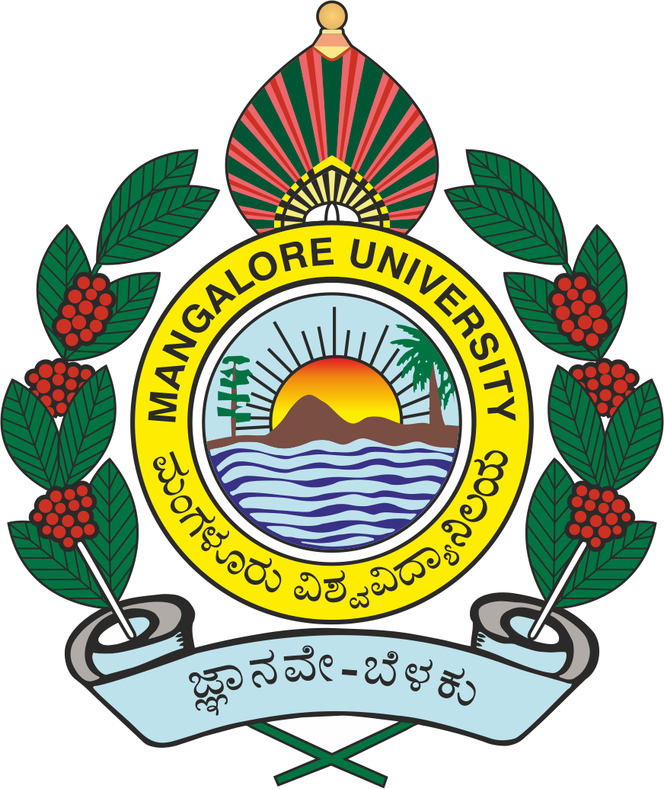

Helsingborg, Sweden
Helsingborg, Sweden
+76 764549903
Helsingborg, SwedenRoles & Responsibility
Techical/Project Lead
Project Management
Crossfunction Operations
Training & Mentoring
Project Management
Crossfunction Operations
Training & Mentoring
Tools
Innography, Jira, Remedy,
Incident management tools,
Derwent Innovation,
Orbit Express,
Jira, MS Excel, Word,
PowerPoint, Visio, PowerBI
Education

M.Sc
(Electronics)
Year Of Graducation - 2007
Mangalore Univarsity
Skills
Stakeholder Management
Cross functional team management
Requirement gathering
Competitive benchmarking
Reverse Engineering Product Teardown,
Reverse BOM Listing and Costing
Value & Cost Engineering
Product and UI/UX Analysis
Competitor Product IP portfolio Analysis
IP Enforcement & Litigation
Prior Art Search & Gap Analysis
Enforcement Evidence Collection
Claim Chart Preparation
Agile Methodologies
Scrum, Inception, Sprint planning
Backlog Refinement, Kanban
Process Improvement
Project Reporting and Presentation
Retail & e-Commerce
Seasoned IT professional with 10 years of experience in IT operations, delivery, and with resource
management. (Certified in Six Sigma Green Belt) Proven knowledge of business strategy, staffing,
training, business development, budgeting for incident management and program management.
Project management using agile methodologies for smooth operation and delivery. Instrumental in
setting up testing methods and processes to reduce costs and lead times. Subject matter expert on
competitive benchmarking and IP projects: My expertise in product teardown and discovering evidence
in competitor products has helped the company produce the best cost-effective products in relation to
the competition and contributed to revenue generation in patent enforcement projects. Analyzed a wide
range of competitive products such as flight cockpit instruments, sensors, oil and gas equipment’s,
safety systems and many more. Identified best-fit products for patent enforcement and created claim maps by
identifying the best and most effective evidence to help attorneys map claims for patent enforcement.
• Advising changes to customers on projects for a higher success rate.
•Verification of tester (ATE) code, check for limits and stability of code.
•Auditing tester codes concerning the Test plan.
•Verify schematic, placement, and layout file for FAB release stages.
• Advising changes to customers on projects for a higher success rate.
•Verification of tester (ATE) code, check for limits and stability of code.
•Auditing tester codes concerning the Test plan.
•Verify schematic, placement, and layout file for FAB release stages.
•Strong presentation and demonstrating skills; Confident, articulate, and professional speaking abilities.
•Excellent written and verbal communication skills.